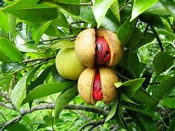

Basonym of Drug
Jatiphala
Main Synonym
- Jatikosha
- Malatiphala
- Malatiphala
Regional Name
- Bengali: Jaiphala
- Gujarati: Jaiphala
- Hindi: Jaiphal
- Kannada: Jajikai
- Tamil: Jatikkai
- Telugu: Jaji Kaya
- English: Nut-meg
Botanical Name
Myristica fragrans Hent
Family
Myristicaceae
Classification (Gana)
Bhavaprakash Nighantu: Karapuradi Varga
Dhanvantari Nighantu: Chandanadi Varga
External Morphology
Evergreen aromatic tree
Useful Parts
Important Phytoconstituent
- Beta-pinene
- Safrol
- Methyleugenol
- Myristicin
- Verrucosin
- Lignans
- Nectandrin
- Trimyristin
Rasa Panchak
- Rasa: Tikta, Katu
- Guna: Laghu, Tikshna
- Virya: Ushna
- Vipaka: Katu
Action
- Kaphavatahara (Balances Kapha and Vata doshas)
Therapeutic Indication
- Deepen (Appetizer)
- Vrushya (Aphrodisiac)
- Grahi (Reduces excessive secretions)
- Swarya (Good for throat)
- Krimighna (Anti-helminthic)
- Kasahara (Treats cough)
- Trushnahara (Treats excessive thirst)
Therapeutic Uses
- Atisara: Jatiphala powder with Sunthi powder paste is beneficial in diarrhea.
- Vipadika: In cracked heel, Jatiphala powder with ghee is applied.
- Udarshoola: Roasted powder is beneficial in abdominal pain.
Dose
- Powder: 0.5-1 gm
- Oil: 1-3 drops
Formulations
- Jatiphaladi Churna
- Lavangachatusama Churna
Adverse Effect
Not Known
Remedial Measure
Not required